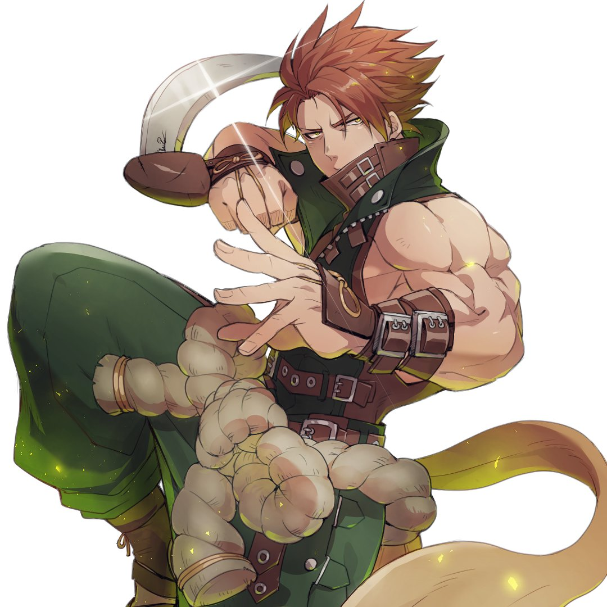

Stater Guide dust loopA former drug trafficker and addict, Chipp struggled in the streets of his hometown until a man called Tsuyoshi took him into his care. He trained Chipp in the arts of Ninjutsu until his death at the hands of a syndicate.
Chipp is portrayed as a muscular, yet slender young man with red eyes and earrings, and with white hair sticking out in all directions. He invariably wears a black tank top—which resembles a leather jacket—tucked into a pair of white trousers with two straps on the left hip, shod in high closed shoes with large buckles. He is equipped with a short, curved silver blade attached to his right wristband that goes up along his arm to his shoulder.
Pick if you like